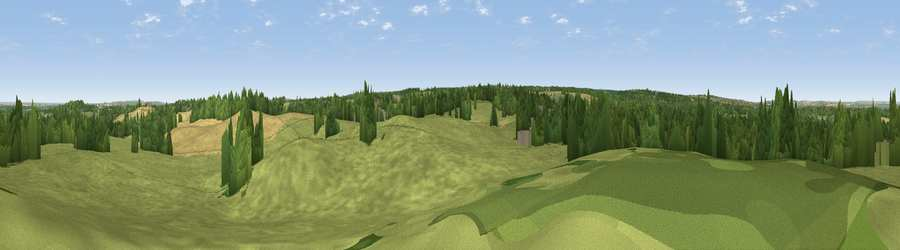

Viewpoint near Newington
#23490 in England · top 18% of its area beats it · near Newington · access?Where it is
The exact computed spot (TQ 85575 64025). Click the marker for map links.
Public access: no public right of way or access land is recorded at this exact spot — it may be on private land. Computed from Natural England's CRoW access layer and OpenStreetMap rights of way — not the legal definitive map. Always verify locally.
The view, rendered

A 360° render of this exact spot computed from the terrain model, tree cover and land cover — summer colours, afternoon light, calibrated against photographs of famous viewpoints. Real trees, hedges and buildings will differ in detail.
The panorama
Grey silhouette: terrain skyline in each direction (720 bearings, Earth curvature and refraction included). Dashed green: skyline with trees (+15 m) and buildings (+8 m) as obstacles. Blue strip: how far the ground is visible on each bearing.
Where the view opens
Wedge length = distance to the farthest visible ground on that bearing (vegetation-aware). Rings at 10, 25 and 50 km.
What fills the view
59% grassland · 23% woodland · 14% cropland · 3% built-up · 1% water
Angular shares of the visible panorama (visual magnitude), not map area. Landscape diversity 0.48 (0–1 Shannon).
Key numbers
More beautiful places nearby
The staircase of upgrades: each row has a higher view potential than everything closer. Driving times are estimates from straight-line distance, calibrated against real road routing — check an actual route before setting out.
| Place | Direction | Drive | Score |
|---|---|---|---|
| Viewpoint near Lower Halstow | NE · 3 km | ~7 min | 57.8 |
| Callum Hill | NNE · 3 km | ~8 min | 59.5 |
| Viewpoint near Thurnham | SSW · 7 km | ~15 min | 63.4 |
| Viewpoint near Charing | SSE · 16 km | ~29 min | 68.6 |
| Viewpoint near Westwell | SE · 20 km | ~34 min | 72.2 |
| Viewpoint near Lympne | SE · 38 km | ~57 min | 72.6 |
| Tolsford Hill | SE · 39 km | ~59 min | 77.9 |
| Viewpoint near Capel-le-Ferne | SE · 46 km | ~67 min | 80.2 |
51.34501, 0.66322 · source: screening · position refined by local search. Computed location — check access rights before visiting.